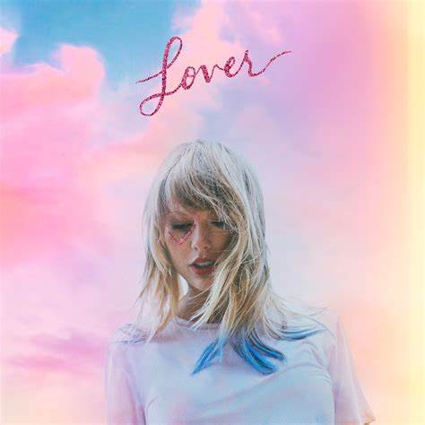
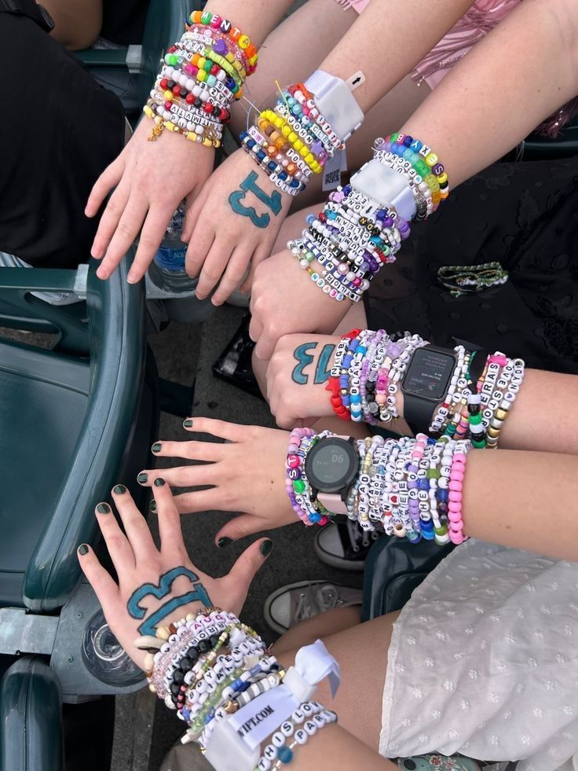
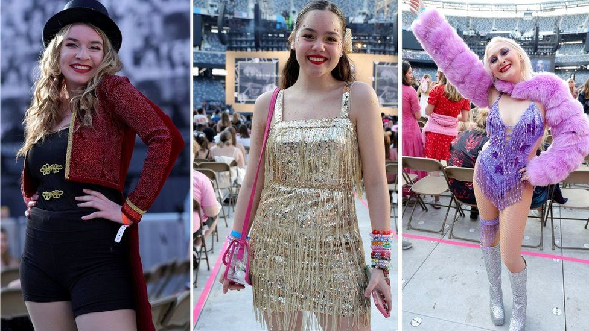
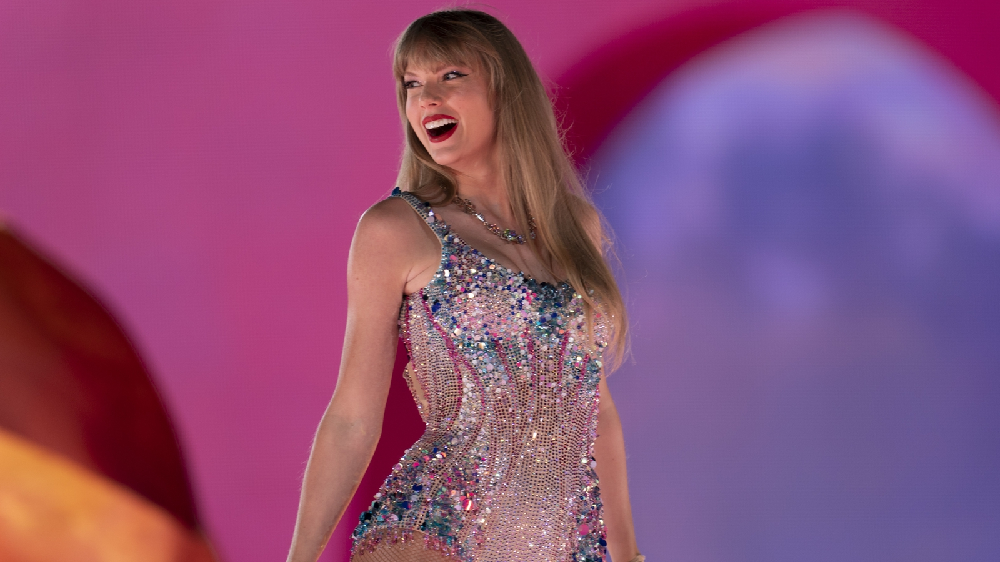
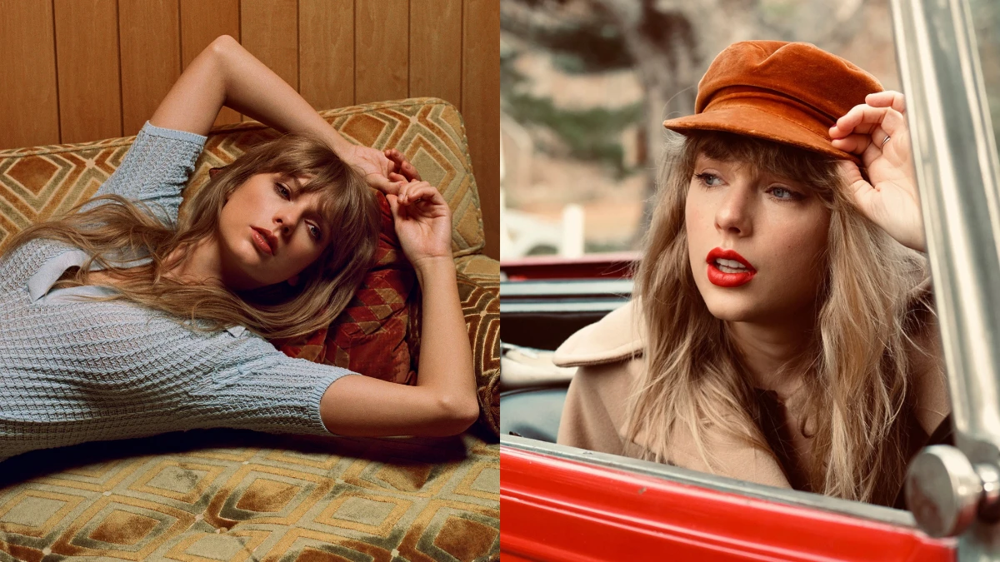

{kind=link}
{kind=link}
{kind=link}
{kind=link}
{kind=link}
{kind=link}
{kind=link}
{kind=link}
{kind=link}
{kind=link}
{kind=link}
{kind=link}
{kind=link}
Official Website
.jpg)
Welcome to Our Website
You can find information of Taylor Swift in this website
About Us
Swiftie 後援會
泰勒絲粉絲後援會是一個由喜愛泰勒絲（Taylor Swift）的粉絲所組成的溫馨大家庭，致力於分享她的音樂、創作故事與最新動態，並凝聚來自各地的 Swifties（泰勒絲粉絲）一同交流與支持偶像。 無論你是從《Love Story》就開始追隨的老粉，還是因《Midnights》、《The Tortured Poets Department》等新作品而入坑的新粉，這裡都歡迎你！我們會定期舉辦線上與線下活動，包括新歌討論會、MV解析、生日慶祝、演唱會應援企劃，以及粉絲見面交流等，讓每一位成員都能感受到歸屬感與熱情。 🌟 加入我們，一起成為泰勒絲音樂旅程中的一部分，讓愛與音樂串連彼此，永不褪色！
音樂專輯旅程
從鄉村風格到流行顛峰，泰勒絲用每張專輯講述一段段動人故事，帶領粉絲穿梭自我探索與成長之路。
演唱會魅力
泰勒絲的現場演出如夢似幻，每場演唱會都是視覺與情感的盛宴，讓粉絲沈浸於音樂與回憶之中。
Swiftie粉絲文化
身為Swiftie意味著陪伴與支持，我們一起破解彩蛋、換手環、唱到破音，只因為我們都在愛的頻率上。
歌詞與意境探索
每句歌詞背後都有深意。從隱喻到情感轉折，Swifties熱衷解析每一行文字中的靈魂密碼。
錄音室專輯數
全球專輯銷量
獲獎次數
葛萊美獎座
泰勒絲的音樂旅程
從鄉村小天后到流行巨星，泰勒絲的每張專輯都訴說著一段成長的故事，也是一代 Swiftie 的共同記憶。 因合約爭議失去原版錄音的擁有權，泰勒絲展開了重錄計畫，以「Taylor's Version」重製她的經典專輯，重新掌握作品主導權。
Taylor Swift
2006年出道專輯，融合鄉村與青春氣息，開啟泰勒絲的音樂旅程。
Fearless
2008年推出，以〈Love Story〉紅遍全球，成為鄉村流行經典。
Speak Now
全專輯詞曲皆由泰勒絲獨自創作，抒發情感真摯而動人。
Red
包含經典失戀神曲〈All Too Well〉，風格多元，極具突破性。
1989
首次全然擁抱流行曲風，帶來〈Shake It Off〉等傳唱神曲。
Reputation
形象大反轉，黑蛇風格代表重新掌控話語權的宣言。
Lover
繽紛浪漫的愛情禮讚，也是她離開前公司後的第一張專輯。
Folklore
疫情期間推出的靜謐之作，展現敘事力與藝術深度。
Evermore
延續Folklore的音樂美學，是她的創作高峰之一。
Fearless (Taylor’s Version)
首張重錄專輯，新增6首「From the Vault」未公開曲目。
Midnights
午夜靈感下誕生的概念專輯，共推出3個版本，展現多面風格。
The Tortured Poets Department
2024最新專輯，探討愛情、背叛與自我修復，充滿詩意與深度。
創作Reputation小故事
Reputation》 是泰勒絲音樂生涯中最戲劇性的一次風格大轉變，也是一張從「被定義」走向「自我定義」的重要專輯。 這張專輯誕生於泰勒絲經歷媒體爭議的時期，像是： 2016年與 Kanye West & Kim Kardashian 的爭執（"snake" 事件） 被網友與媒體貼上「心機」、「偽善」、「炒作戀情」等負面標籤 社群媒體上幾乎消失一年，完全進入潛水狀態，這段時間原本外界預期她會推出一張更溫柔、修復關係或是延續《1989》的流行專輯，但 她選擇的風格是完全反擊： 黑蛇符號成為視覺主軸（以其人之道還治其人之身） 曲風偏向 黑暗電子流行 + 嘻哈節奏 + 工業音色 歌詞尖銳直接，主打不再討好任何人，像是： -〈Look What You Made Me Do〉 -〈...Ready For It?〉 -〈I Did Something Bad〉
歌詞歌曲介紹
此處將探討更多歌詞想傳遞的內容以及一些藏在歌詞中的彩蛋
歌詞和Bridge
Lover：
We could leave the Christmas lights up 'til January
我們可保留聖誕燈到"一月"
And this is our place, we make the rules
這是我們的家 由我們決定
（截自 Liya Music Land 翻譯 已授權）
We could leave the Christmas lights up 'til January
我們可保留聖誕燈到"一月"
And this is our place, we make the rules
這是我們的家 由我們決定
（截自 Liya Music Land 翻譯 已授權）
High Infidelity：
Do you really want to know where I was April 29th?
你真的想知道四月二十九號那天我去了嗎?
Do I really have to chart the constellations in his eyes?
難道我非得畫張地圖 帶你到她眼中的點點星座嗎?
（截自 Swiftie_Kim 翻譯 已授權）
Do you really want to know where I was April 29th?
你真的想知道四月二十九號那天我去了嗎?
Do I really have to chart the constellations in his eyes?
難道我非得畫張地圖 帶你到她眼中的點點星座嗎?
（截自 Swiftie_Kim 翻譯 已授權）
You All Over Me：
The best and worst day of June
六月最美好卻也是最痛苦的一天
Was the one that I met you
是遇見你的那一天
With your hands in your pockets
你手插在口袋裡
And your 'don't you wish you had me' grin
你散發著一種"你多希望你多擁有我的態度"
（截自 Liya Music Land 翻譯 已授權）
Know more
The best and worst day of June
六月最美好卻也是最痛苦的一天
Was the one that I met you
是遇見你的那一天
With your hands in your pockets
你手插在口袋裡
And your 'don't you wish you had me' grin
你散發著一種"你多希望你多擁有我的態度"
（截自 Liya Music Land 翻譯 已授權）

Story behind Ronan
"Ronan" was previously a charity single, released on September 8, 2012, as part of Stand Up to Cancer, with all proceeds going to cancer charities in the U.S. It reached number 16 on the Billboard Hot 100 and number 2 on the Digital Song Sales chart. "Ronan" is based on an incredibly moving true story and the experiences of Maya Thompson, whose young son Ronan died from neuroblastoma, a rare type of cancer, in 2011.
The lyrics are inspired by a blog kept by Thompson, with Swift crediting Thompson as a co-writer on the track. Some of the song's most notable lyrics include: "I remember the drive home / When the blind hope turned to crying and screaming 'Why?' / Flowers pile up in the worst way, no one knows what to say / About a beautiful boy who died." Know MorePortfolio
此為 Era Tour 的照片集
- All
- Fearless & Speak Now
- Red & 1989
- Lover & Reputation
- Folklore, Evermore & Midnights
粉絲文化介紹
參加演唱會不只是一場表演，更是一場屬於粉絲的儀式感盛典。
交換手鍊

在 Taylor Swift 演唱會上配戴「友誼手鍊」的獨有文化源自於她 2022 年推出的歌曲《You’re on Your Own, Kid》中「So make the friendship bracelets, Take the moment and taste it, You’ve got no reason to be afraid」（製作友誼手鍊，花點時間品嚐，你沒有理由害怕）。Swifties會在「友誼手鍊」上會被串上自己的名字、喜歡的歌曲與歌名等，並 在在演唱會場上交換這些象徵着友誼的手鍊，與同樣喜歡着 Taylor 的粉絲們互相交朋友；因此「友誼手鍊」成為了觀看 Taylor 演唱會的基本裝束之一。
- DIY 手鍊
- 歌迷間互換
- 彷彿參加嘉年華
手上劃13

13是Taylor最愛的數字，許多粉絲會在手上畫上13號，象徵幸運與對她的致敬。 泰勒絲 (Taylor Swift) 1989 年 12 月 13 日出生於賓州西雷丁，是射手座。但這並不是這個數字對這位華麗熱門製作人如此重要的唯一原因。 斯威夫特在 2009 年 MTV 採訪中進行了更深入的探討，她透露，她在每次演出前都會在手上畫下這個數字，強調它是好運的象徵。她進一步指出： 「我是13號出生的。 13 號星期五，我就滿 13 歲了。我的第一張專輯在 13 週內就獲得了金唱片獎。我的第一首排名第一的歌曲有 13 秒的前奏。每次我獲獎時，我都會坐在第 13 個座位、第 13 排、第 13 區或 M 排（即第 13 個字母）。” 值得注意的是，泰勒絲將她的紅色專輯《The Lucky One》中的第 13 首歌曲命名為「The Lucky One」。此外，她令人難以置信的曲目中的五首歌曲在 Billboard Hot 100 排行榜上最高排名第 13。其中一首歌曲《Mastermind》是其專輯的第十三首。
- 特殊數字象徵
- 使用亮粉筆或彩繪筆
- 彰顯身為Swiftie的身份
Dress Code

粉絲會根據不同專輯的主題穿搭，像是紅唇、亮片裝、或是復古風，場內宛如伸展台！
- 專輯主題穿搭
- 增添演唱會氛圍
- 是粉絲間的默契
Fan Chant 巡演出發前的應援準備
準備好在 The Eras Tour 和 Taylor 一起大聲應援了嗎？跟著這份應援指南，一起成為全場最閃的 Swiftie ✨
1. Lover Era｜You Need To Calm Down
Taylor：“And control your urges to scream about all the people”
Swifties：“Cause shade never made anybody less gay so”
2. Fearless Era｜You Belong With Me
Taylor：“Oh, I remember you driving to my house / In the middle of the night…”
Swifties：每句歌詞節奏後拍手 *clap clap*（Double Claps 來自 2009 巡演）
3. evermore Era｜Marjorie
全場打開手電筒照亮星海，向 Taylor 的祖母致敬 🌌
4. reputation Era｜Delicate
Taylor：“But you can make me a drink”
Swifties：“One, two, three, let’s go bitch!”（源自 Swiftie Emily 的經典呼喊）
5. Red Era｜All Too Well
Taylor：“You said if we had been closer in age maybe it would have been fine”
Swifties：“How’d that make you feel？”
6. 1989 Era｜Bad Blood
Taylor：“Band-Aids don’t fix bullet holes…”
Swifties：“You forgive, you forget, but you never let it go”
7. Midnights Era｜Anti-Hero
Taylor：“Like some kind of congressman?”
Swifties：“Taylor, you’ll be fine.”（來自 Bleachers 合作版）
8. Midnights Era｜Bejeweled
Swifties：“Where are you going, Taylor？”
Taylor：“I’m going out tonight.”
Recent Posts
這裡為其他和Taylor Swift相關的網站和報導

Vogue
泰勒絲為何如此受歡迎？為了知道這個答案，我問了一位心理學家

Marie Claire